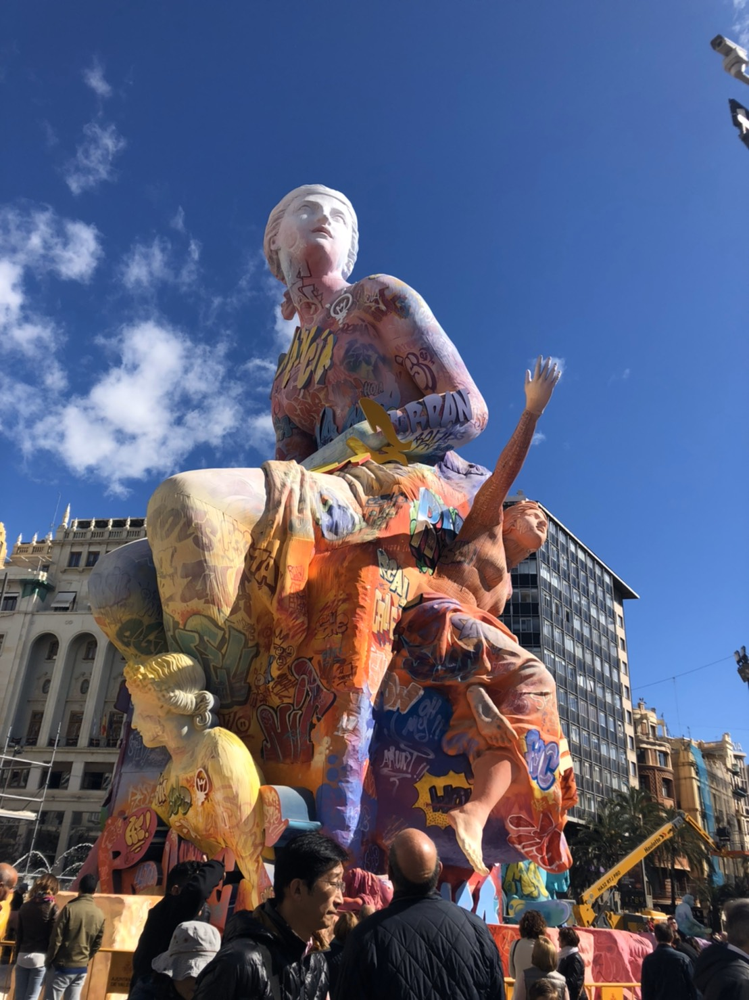
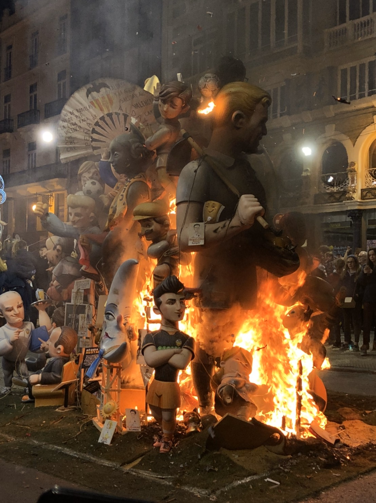
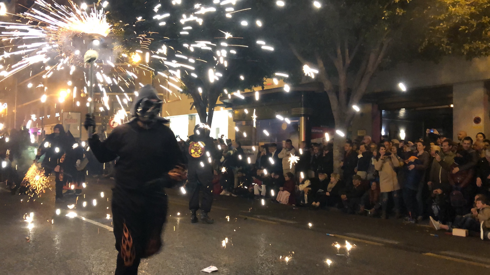

The Falles (Valencian: Falles; Spanish: Fallas) is a traditional celebration held in commemoration of Saint Joseph in the city of Valencia, Spain. The term Falles refers to both the celebration and the monuments (Falla, singular; Falles, plural) burnt during the celebration. A number of towns in the Valencian Community have similar celebrations inspired by the original Falles de València celebration. The Falles festival was added to UNESCO's intangible cultural heritage of humanity list on 30 November 2016.
Each neighbourhood of the city has an organised group of people, the Casal faller, that works all year long holding fundraising parties and dinners, usually featuring the noted dish paella, a specialty of the region. Each casal faller produces a construction known as a falla which is eventually burnt. A casal faller is also known as a comissió fallera and currently there are approximately 400 registered in Valencia.
 從中世紀開始，據稱 瓦倫西亞 Valencia 的木匠在冬天夜晚常需要工作至深夜，製作木頭的工藝品，為了有充足的照明，木匠遂將木條上裝置大蠟燭充作照明設備，稱做parot。有一些木匠會在parot上裝飾洋娃娃，到了十八世紀，工匠轉而使用蠟及布等材料來裝飾稱作木偶ninots。最後演變成今日的法雅fallas。法雅節Las Fallas又稱火節，當時木匠為了紀念他們的保護神-聖荷西 San José ， 其生日為3月19日，該日又是冬天結束，春天的開始，日照時數增長，木匠不需挑燈夜戰， 燃燒法雅fallas成為這個節日的習俗，因此演變成火節。
